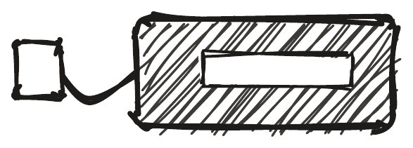
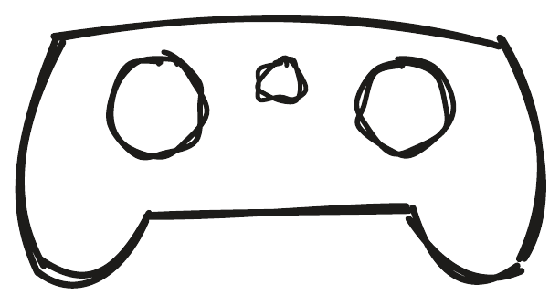
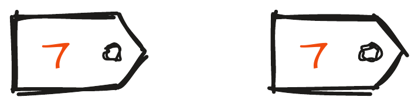
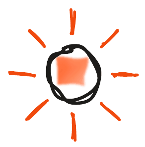
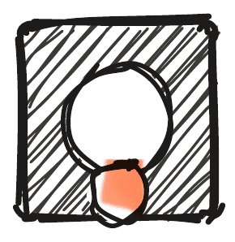
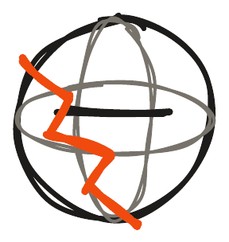
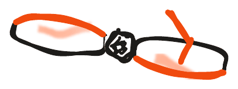
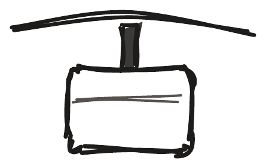
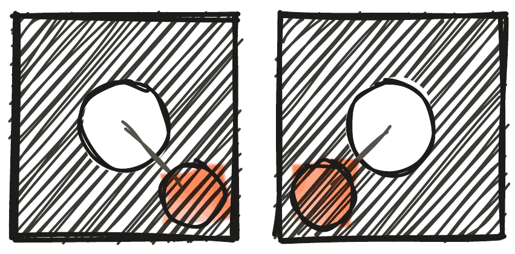
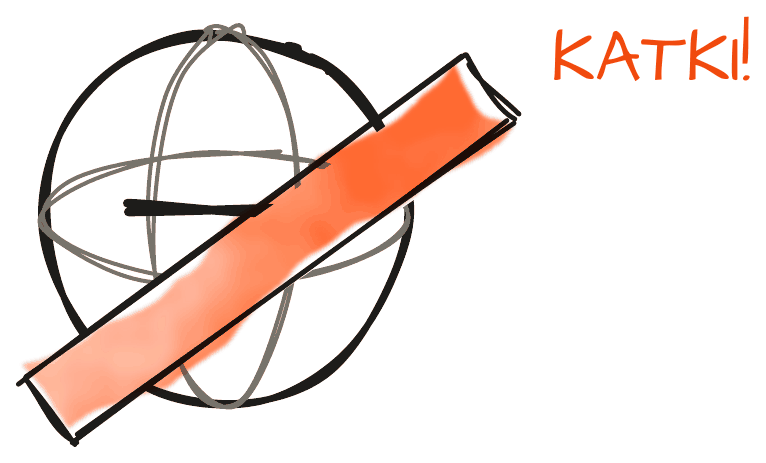

Enamik B200 muresid on lihtsad ja need saad ise ära parandada. Kõigepealt kontrolli kolme asja, siis otsi oma probleem tabelist. Kuidas veaotsingut üldse teha, on lähemalt juhendis „Miks mu pilt nii kehv on?“.
Alusta siit
Enamik muresid on lihtsad, nii et kontrolli alati kõigepealt kolme asja. Kas aku on täis, korralikult droonis kinni ja juhe terve? Kas pult on sisse lülitatud ja patareid täis ja õigetpidi? Kas puldil ja droonil on sama number? Kui droon ikka ei tööta, lülita mõlemad välja ning lülita sisse kõigepealt droon ja alles siis pult. See aitab üllatavalt tihti.



Pult ja ühendus
Kui pult ei lülitu sisse, on patareid tühjad või valetpidi. Kui pult piiksub, on puldi patareid või drooni aku tühi. Kui drooni ja puldi tuled vilguvad, pole need seotud ja tuleb uuesti siduda. Kui pult juhib valet drooni, sidus keegi teine samal ajal oma drooni: lülita lähedal olevad droonid välja ja seo uuesti. Kui tuled vahetavad värvi, aga droon ei allu, on pult vales režiimis.

Käivitus ja lend
Kui mootorid ei käivitu, pole kangid keskel: lase kangid keskele ja vajuta pre-arm uuesti. Kui droon ei reageeri kohe pärast sisselülitamist, käivitub see alles: oota, kuni tagumine LED lõpetab vilkumise. Kui propellerid ei peatu pärast maandumist, hoia tõmbekangi all üle kahe sekundi. Kui droon keerleb õhkutõusul, on propellerid vales kohas. Kui see triivib, kalibreeri ja trimmi. Kui see väriseb, on propeller katki või kõver, mõni kruvi lahti või kaitsepall vigane.

Pärast kõva kukkumist
Pärast kõva kukkumist vaata üle kaitsepall (ükski varb ei tohi olla murdunud ega propellerite vastas), propellerid (terved, sirged, õigel kohal ja lõpuni võllil), aku (paigas, juhe terve, ei ole paistes) ja mootorid: ühenda enne aku lahti ja keeruta käega, mootorid peavad pöörlema vabalt ja kriginata. Lõpuks aseta droon tasasele pinnale ja kalibreeri uuesti.




Kaitsepall ja mootor
Murdunud kaitsepalli varba saab parandada plastikkeevitusega, aga tee seda koos treeneriga. Jootekolb ei ole selleks parim tööriist: vaja on eraldi otsikut ja madalamat temperatuuri, ja jootmisotsikuga plastikut sulatada ei tohi. Kui üks mootor ei pöörle, on mootor või selle kiirusregulaator rikkis ja droon tuleb viia treenerile. Kui mootor on pärast lendu väga kuum, lase jahtuda, ja kui see kordub, tuleb mootor vahetada.
Ei aidanud?
Kui miski ei aidanud, märgi droon näiteks teibiga ja pane kõrvale, et keegi teine sellega ei lendaks. Vii droon treenerile ja räägi, mis numbriga droon see on, mis juhtus ja millal. Ära võta drooni ise lahti ega hakka jootma: seda teeme koos. Kuidas veaotsingut samm-sammult teha, on lähemalt juhendis Miks mu pilt nii kehv on? (osa „Otsi nagu detektiiv“).

Aku, pult, õige paar: kõigepealt need kolm.
Treenerile: 10 minuti plaan
| Aeg | Slaid | Mida rääkida |
|---|---|---|
| 0:00 | Pealkiri | Küsi: „Mis oli viimati sinu droonil viga?“ Kogu vastused tahvlile ja leia need hiljem tabelist. |
| 0:40 | Joon. 1: Alusta siit | Enamik muresid on lihtsad, nii et kontrolli alati kõigepealt kolme asja. Kas aku on täis, korralikult droonis kinni ja juhe terve? Kas pult on sisse lülitatud ja patareid täis ja õigetpidi? Kas puldil ja droonil on sama number? Kui droon ikka ei tööta, lülita mõlemad välja ning lülita sisse kõigepealt droon ja alles siis pult. See aitab üllatavalt tihti. |
| 2:08 | Joon. 2: Pult ja ühendus | Kui pult ei lülitu sisse, on patareid tühjad või valetpidi. Kui pult piiksub, on puldi patareid või drooni aku tühi. Kui drooni ja puldi tuled vilguvad, pole need seotud ja tuleb uuesti siduda. Kui pult juhib valet drooni, sidus keegi teine samal ajal oma drooni: lülita lähedal olevad droonid välja ja seo uuesti. Kui tuled vahetavad värvi, aga droon ei allu, on pult vales režiimis. |
| 3:37 | Joon. 3: Käivitus ja lend | Kui mootorid ei käivitu, pole kangid keskel: lase kangid keskele ja vajuta pre-arm uuesti. Kui droon ei reageeri kohe pärast sisselülitamist, käivitub see alles: oota, kuni tagumine LED lõpetab vilkumise. Kui propellerid ei peatu pärast maandumist, hoia tõmbekangi all üle kahe sekundi. Kui droon keerleb õhkutõusul, on propellerid vales kohas. Kui see triivib, kalibreeri ja trimmi. Kui see väriseb, on propeller katki või kõver, mõni kruvi lahti või kaitsepall vigane. |
| 5:05 | Joon. 4: Pärast kõva kukkumist | Pärast kõva kukkumist vaata üle kaitsepall (ükski varb ei tohi olla murdunud ega propellerite vastas), propellerid (terved, sirged, õigel kohal ja lõpuni võllil), aku (paigas, juhe terve, ei ole paistes) ja mootorid: ühenda enne aku lahti ja keeruta käega, mootorid peavad pöörlema vabalt ja kriginata. Lõpuks aseta droon tasasele pinnale ja kalibreeri uuesti. |
| 6:33 | Joon. 5: Kaitsepall ja mootor | Murdunud kaitsepalli varba saab parandada plastikkeevitusega, aga tee seda koos treeneriga. Jootekolb ei ole selleks parim tööriist: vaja on eraldi otsikut ja madalamat temperatuuri, ja jootmisotsikuga plastikut sulatada ei tohi. Kui üks mootor ei pöörle, on mootor või selle kiirusregulaator rikkis ja droon tuleb viia treenerile. Kui mootor on pärast lendu väga kuum, lase jahtuda, ja kui see kordub, tuleb mootor vahetada. |
| 8:02 | Joon. 6: Ei aidanud? | Kui miski ei aidanud, märgi droon näiteks teibiga ja pane kõrvale, et keegi teine sellega ei lendaks. Vii droon treenerile ja räägi, mis numbriga droon see on, mis juhtus ja millal. Ära võta drooni ise lahti ega hakka jootma: seda teeme koos. Kuidas veaotsingut samm-sammult teha, on lähemalt juhendis Miks mu pilt nii kehv on? (osa „Otsi nagu detektiiv“). |
| 9:30 | Jäta meelde | „Aku, pult, õige paar: kõigepealt need kolm.“ |
Demo: Treener rikub kolm drooni (aku lahti, vale paar, propeller vales kohas) ja meeskonnad otsivad võidu vead üles.